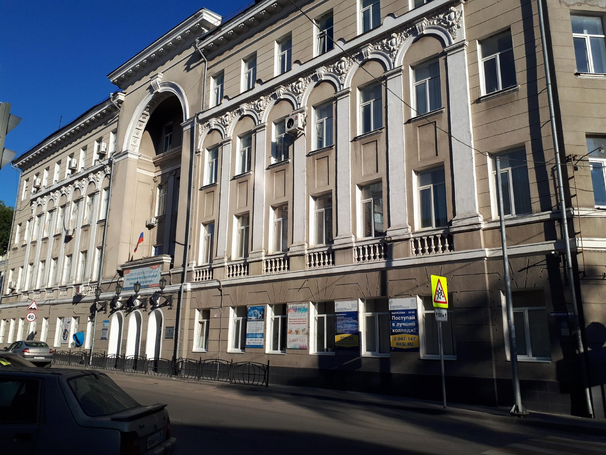

Сегодня в РКСИ обучается более 3500 студентов, он состоит из 5 отделений, учебный процесс ведут 150 преподавателей, 25% которых имеют учёные степени и звания. В университете работают 3 доктора наук, профессора. На отделении иностранных студентов обучается около 56 студентов из 6 стран мира. Высокое качество обучения студентов и слушателей достигается на основе новейшей материально-технической базы колледжа, интеллектуальном потенциале преподавательского состава, современных концепциях и инновационных технологиях подготовки специалистов, новаторстве и подвижничестве его работников.
